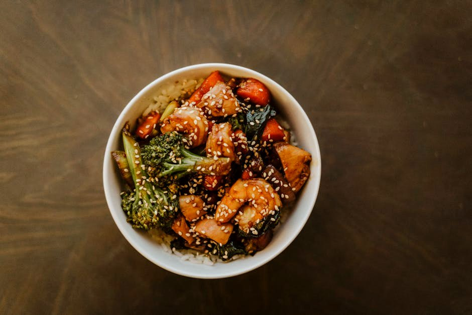

Teriyaki Chicken & Broccoli
High-proteinGluten-freeDairy-free

Teriyaki Chicken & Broccoli delivers 70 g of protein for just 14 g net carbs — a quick dinner that comes together fast. A filling, macro-balanced dinner that won't spike your blood sugar.
70 gProtein
14 gNet carbs
16 gFat
4 gFiber
480Calories
Ingredients
- 230 g Chicken breast
- 180 g Broccoli
- 2 tbsp Sugar-free teriyaki sauce
- 1 tsp Sesame oil & seeds
- Garlic & ginger, to taste
Equipment
- non-stick skillet
Method
- Sear the sliced chicken in sesame oil until golden.
- Add broccoli and a splash of water; cover and steam-fry until tender.
- Toss with teriyaki, garlic and ginger; finish with sesame seeds.
Storage & make-ahead
Fridge: keeps 3–4 days in an airtight container — reheat gently. Most portions freeze well for up to 2 months; thaw overnight.
Tip
A lean, fast weeknight stir-fry. Use a no-sugar teriyaki to keep carbs down.
Full nutrition (estimated, per serving): 480 kcal · 70 g protein · 14 g net carbs · 16 g fat (3 g sat) · 4 g fiber · 7.5 g sugar · 1320 mg sodium. Allergens: Soy. Macros are realistic estimates from standard food-composition values; brands and portions vary.
Get the full cookbook (PDF) — 100 recipes, 3 meal plans & the science →